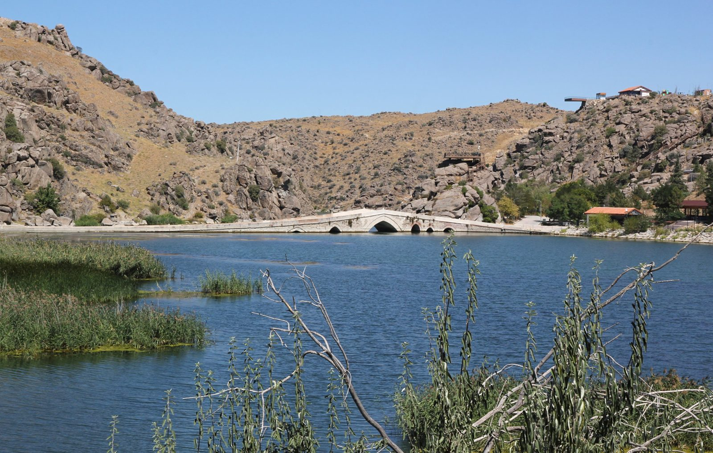
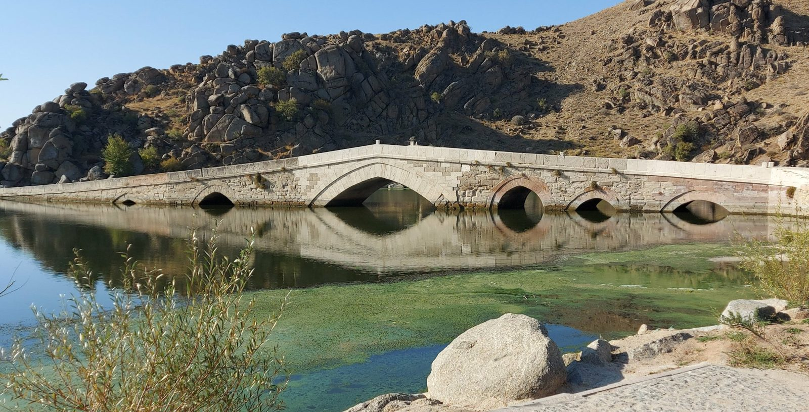
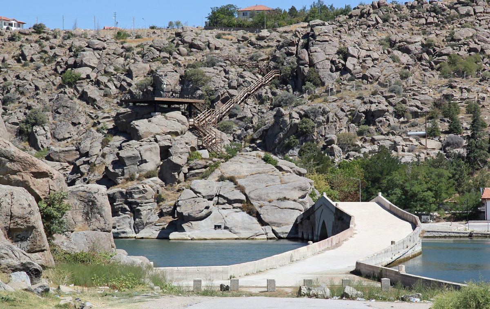
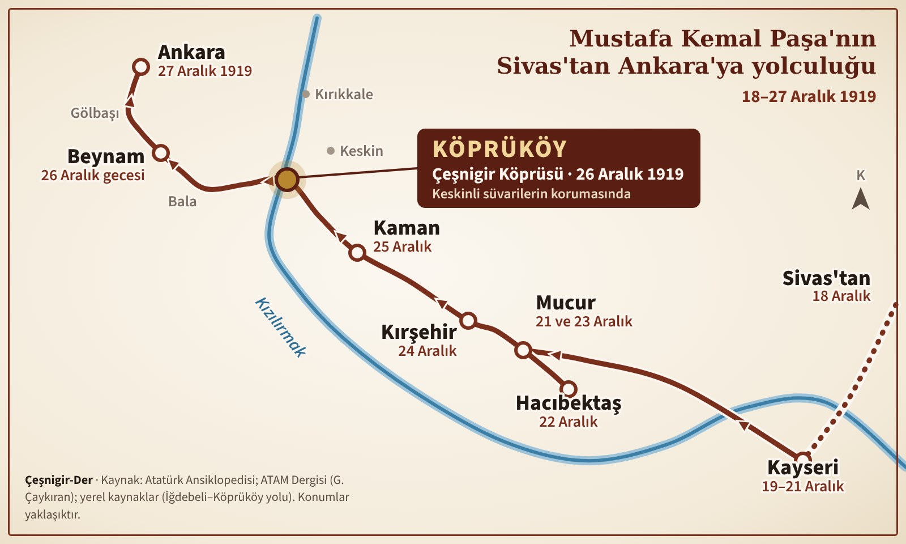
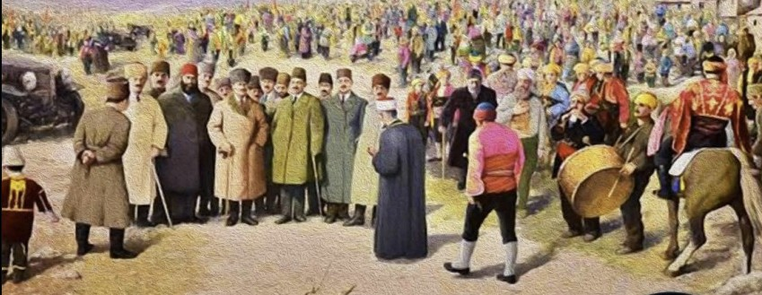

Çeşnigir-Der, Köprüköylüleri kültür, yardımlaşma ve dayanışma etrafında bir araya getirir. Köyde yaşayanla gurbette yaşayan arasındaki bağı canlı tutmak için haberleri, ilanları ve özel günleri bu sayfada paylaşır.
Dernek, Köprüköy'ün tarihî ve kültürel zenginliğini yaşatmak, yöre halkı arasındaki dayanışmayı kurumsal bir çatı altında güçlendirmek amacıyla çalışır. Dernek merkezi, 6 Eylül 2026'da Köprüköy Çarşı Merkezi'nde düzenlenen törenle hizmete açıldı.
Neler yapıyoruz?
- Köyden haberleri ve duyuruları herkese ulaştırıyoruz.
- Düğün, nişan, mevlit ve cenaze gibi özel günleri takvimde duyuruyoruz.
- Köylülerin alım satım ve yardımlaşma ilanlarına aracılık ediyoruz.
- Çeşnigir Köprüsü'nü ve Köprüköy'ün tarihini tanıtıyoruz.
- Köyde yaşayanla gurbetteki hemşehrilerimiz arasındaki bağı canlı tutuyoruz.
Dernek Kurulları
Yönetim Kurulu
- Bekir BAŞKAYABaşkan
- Yılmaz GÜVENBaşkan Yardımcısı
- İsmail EKİNSekreter
- Bilal GÖKMENMuhasip
- Arap DAŞDELENÜye
- Fatih GÜLERÜye
- Halis GÖKÇEÜye
Denetim Kurulu
- M. Sedat GÜVENBaşkan
- Zeynal DOĞANÜye
- Arap DEMİRHANÜye
Köyümüz Köprüköy

Kırıkkale'nin Keskin ilçesine bağlı Köprüköy, adını Kızılırmak üzerindeki tarihi Çeşnigir Köprüsü'nden alır; halk arasında kısaca "Köprü" de denir. Köy, Ankara–Kırşehir yolunun eski güzergâhında, ırmağın kayalar arasında daraldığı ve en sağlam geçit verdiği yerde kurulmuştur. Yerleşimin Selçuklu döneminde başladığı kabul edilir.
Köyümüzün asıl hikâyesi köprüyle birlikte yazılmıştır. Osmanlı döneminde kervanların geçtiği bu kayalık geçidi eşkıyadan korumak için köprünün çevresine derbendciler, yani geçit bekçileri yerleştirildi. Bekçilerin aileleri burada kalıp çoğaldı; han ve cami yapıldı. Böylece bir güvenlik noktası, zamanla kalabalık bir köye dönüştü. Kayıtlarda köyün adı 1777'de "Çaşnigir Köprüsü", 1815'te "Çaşnigir Derbendi" olarak geçer.
Çeşnigir Köprüsü


Köprü kesme taştan yapılmıştır; üzerinde kitabe de süsleme de yoktur. Ayaklarının sağlam kayaya oturması için kayaların çizgisini izleyerek eğri kurulmuş, ortası iki yana eğimli biçimde yükselir. Ortadaki büyük sivri kemerin altından ırmağın ana akıntısı geçer; yanlardaki küçük gözlerden ise yalnızca taşkınlarda su akar. Gövdenin içine gizlenmiş üç küçük göz, ağırlığı azaltmak için yapılmıştır.
Köprünün ölçüleri
- Uzunluk113,25 m (bazı kaynaklarda 110 m)
- Genişlik5,80 m yol, korkuluklarla 6 m
- Ana kemer18,60 m açıklık, 13,65 m yükseklik
- Kemer açıklıklarıAnkara yönünden: 3,75 · 4,00 · 4,13 · 6,28 · 18,60 · 5,90 m
- Gizli gözlerGövde içinde üç sivri kemerli hafifletme gözü
- MalzemeKesme taş
"Çeşnigir" ne demek?
Farsça çaşni (tat) ve gir (alan) sözlerinden gelir. Selçuklu ve Osmanlı saraylarında padişaha sunulan yemekleri önceden tadıp güvenliğinden sorumlu olan görevliye çaşnigir denirdi; Osmanlı sarayının en itibarlı görevlerinden biriydi.
Kelimenin bir anlamı da darphanede basılan altın ve gümüş paraların ayarını denetleyen görevlidir. Köprünün neden bu adı aldığı kesin olarak bilinmiyor; belgelerde hem "Çaşnigir" hem "Çeşnigir" yazılışı geçer.
Köprüyü kim yaptırdı?
Kitabesi olmadığı için bu soru hâlâ tartışmalıdır. En yaygın görüş, köprünün 13. yüzyılda Anadolu Selçukluları döneminde, yanındaki hanla birlikte yapıldığıdır. Sanat tarihçisi Fügen İlter, köprünün İslam öncesi döneme ait eski bir köprünün temelleri üzerine kurulduğunu, Osmanlı döneminde yenilenince ilk biçimini yitirdiğini yazar.
Öte yandan 1936'da köprüyü inceleyen Avusturyalı K. Ritter, bugünkü hâliyle Osmanlı öncesine ait olamayacağını ve Sultan Murad zamanında yapıldığını ileri sürmüştür. Tarihçi Prof. Dr. Hamit Pehlivanlı'nın Osmanlı arşivinde bulduğu 27 Temmuz 1852 tarihli belge de köprüyü "Sultan Murad Han'ın yaptırdığı Çaşnigir Köprüsü" diye anar. Pehlivanlı, o yıllarda köprünün üzerinde bugün kayıp olan bir kitabenin bulunmuş olabileceğini düşünür.
Derbend: köprünün bekçileri

Derbend, Farsça "geçit tutmak" demektir. Osmanlı devleti, bugünkü jandarma ve polisin olmadığı dönemlerde, eşkıyanın sık görüldüğü tehlikeli geçitleri civar köylerin halkına korutur; karşılığında onları bazı vergilerden muaf tutardı. Bekçiler yolcuların canına ve malına zarar gelmeyeceğine söz verir, bir şey olursa zararı öderlerdi. Başlarındaki kişiye derbend ağası denirdi.
Çaşnigir Köprüsü, Kırşehir Sancağı'nın Konur Kazası'nda, bu düzenin Anadolu'daki önemli noktalarından biriydi. 17. yüzyıl sonunda başka yerlerde bekçiler dağılırken, burada 19. yüzyılın ortasında hâlâ kalabalık bir nüfus yaşıyordu: 1845 vergi defterine göre köyde 182 Müslüman hane, 1840 defterine göre de 7 Rum hanesi vardı. Hane başına beş kişi sayılırsa nüfus 945 civarındadır.
Zamanla düzen bozuldu. Arşiv belgelerinde halktan fazla para isteyen ağalar, vergi muafiyetine rağmen vergi talep eden valiler ve halka zulmettiği için 1822'de cezalandırılan Deli Battal adlı bir ağa geçer. 1831'de derbendin muafiyeti kaldırıldı; Tanzimat'tan sonra yol güvenliğini önce zaptiye, sonra jandarma üstlendi. Derbendden geriye bugün yalnızca köprü kaldı; han ve caminin izi yoktur.
Atatürk köyümüzden geçti

Mustafa Kemal Paşa ve Heyet-i Temsiliye, 18 Aralık 1919'da Sivas'tan Ankara'ya doğru yola çıktı. Kayseri, Mucur, Hacıbektaş ve Kırşehir'den sonra 25 Aralık gecesini Kaman'da geçirdiler. Ertesi gün, 26 Aralık Cuma, heyet Keskinli süvarilerin korumasında İğdebeli–Köprüköy yolunu kullanarak Kızılırmak'ı geçti ve Bala'ya ulaştı. Geceyi Beynam köyünde geçiren heyet, 27 Aralık 1919'da Ankara'ya girdi.
Kaman'da Paşa'yı ağırlayan Ali Çavuş'un yeğeni Mehmet Bektaş'ın anlattığına göre, Paşa yolda nerede kalabileceğini sorunca Ali Çavuş, "Köprü köyünde Hacı Ali Ağa'nın odasında kalırsınız" demiştir. Irmağın muhtemelen köyümüzdeki Çeşnigir Köprüsü'nden geçildiği düşünülmektedir; kaynaklar köprünün adını ayrıca anmaz.


Yolculuk gün gün
- 18 AralıkSivas'tan hareket
- 19–21 AralıkKayseri
- 21 AralıkMucur
- 22 AralıkHacıbektaş
- 23 AralıkYeniden Mucur
- 24 AralıkKırşehir
- 25 AralıkKaman
- 26 AralıkKöprüköy, Bala; gece Beynam köyü
- 27 AralıkAnkara
Kaynak: Vikipedi, Balâ · Atatürk Ansiklopedisi, Mustafa Kemal Paşa'nın Ankara'ya Gelişi · G. Çaykıran, ATAM Dergisi · Sırrı Kardeş, Heyet-i Temsiliye ve Mustafa Kemal Kırşehir'de (1950), aktaran Adnan Yılmaz
Tarihçe
Tarihten yazılar
- Atatürk'ün köyümüzden geçişi (1919)26 Aralık 1919
- Rivayet: MÖ 6. yüzyılHerodot, Lidya Kralı Kroisos'un Kızılırmak'ı orada bulunan köprülerden geçtiğini yazar, ama yer adı vermez. Tarihçi Olcay Zengin Koşan (2021), O'Grady'ye (2002) dayanarak bu geçişin bugünkü köprünün yerinde bulunmuş daha eski bir köprüden olmuş olabileceğini öne sürer. Garstang ve Gurney (1959) da köprünün altında Roma dönemi ve daha eski köprülerden kalma taşlar gördüklerini yazar. Ancak Herodot köprüyü görmemiştir; geçişin burada olduğunu kesinleştiren bir belge yoktur.Kaynak: O. Zengin Koşan, "Antik Çağ'da Kızılırmak", 2021 · J. Garstang ve O. R. Gurney, The Geography of the Hittite Empire, 1959 · Pehlivanlı, Yedi Kıta 2012
- 13. yüzyılKöprü Anadolu Selçukluları döneminde, yanındaki bir hanla birlikte yapılır. Sanat tarihçisi Fügen İlter'e göre İslam öncesine ait eski bir köprünün temelleri üzerine kurulmuştur. Han bugün ayakta değildir.Kaynak: Pehlivanlı, Yedi Kıta 2012 · KÜRE Ansiklopedi, Çeşnigir Köprüsü
- 1402Rivayete göre Timur'un ordusu Ankara Savaşı'na giderken köprüden geçer.Kaynak: Wikipedia, Çeşnigir Bridge · KÜRE Ansiklopedi, Çeşnigir Köprüsü
- 16. yüzyılRivayete göre Yavuz Sultan Selim'in Mısır Seferi hazırlıkları sırasında köprü elden geçirilir; onarımın Mimar Sinan'a ait olduğu söylenir.Kaynak: KÜRE Ansiklopedi, Çeşnigir Köprüsü · Kırıkkale Turizm ve Tanıtım Portalı
- 1609İki padişah emri: Temmuz'da Ankara Beyi'ne Çaşnigir köprüsü civarındaki palangalarda eşkıya tahkiki, Kasım'da Çaşnigir Köprüsü yani Kırkkeçili kalesindeki eşkıyanın temizlenmesi emredilir.Kaynak: BOA, Mühimme Defteri 78/504 ve 78/1234
- Osmanlı dönemiKayalık ve tehlikeli geçidi korumak için köprü çevresine 50 kadar derbendci (geçit bekçisi) yerleştirilir. Bekçilerin aileleri zamanla bugünkü köyün çekirdeğini oluşturur.Kaynak: Pehlivanlı, Yedi Kıta 2012
- 1724Bir padişah emrinde Ankara sancağının sınırı "Çaşnigir" olarak anılır; yolların eşkıyaya karşı korunması istenir.Kaynak: BOA, Mühimme Defteri 131/1456
- 1777Köy, devlet kayıtlarında "Çaşnigir Köprüsü karyesi" adıyla geçer. Köy ahalisi adına Köprülüzâde Osman Ağa, Rakka'da iskân edilen Kürt tayfası ve oymaklarının arazi ve bağlara tecavüz, mal gasbı ve adam öldürmesinden şikâyet eder.Kaynak: BOA, Cevdet Adliye 38/2270 · Vikipedi, Köprüköy (Keskin)
- 1791Çaşnigir Derbendi Ağası Hacı Mehmed Ağa ölür. Yerine oğlu Süleyman atanır, fakat nüfuzlu Cabbarzâde Süleyman Bey ağalığı kendi üzerine aldırır; padişah fermanıyla oğula başka bir görev verilir.Kaynak: Pehlivanlı, Yedi Kıta 2012
- 1807Konur kazasındaki Çaşnigir Köprüsü derbendinin muhafızı Hacı Mehmed'in ölümü üzerine görev Cabbarzâde Süleyman Bey'e verilir.Kaynak: BOA, Ali Emiri III. Selim 313/18217
- 1815Kayıtlarda köyün adı "Çaşnigir Derbendi" olur. Aynı yıl Köprülü oğullarından Hacı Ali, Hüsrev Şir ve Mehmed Emin'in halktan fazla para istediği şikâyeti üzerine Kırşehir Mutasarrıfı Vezir Ali Paşa'ya inceleme emri verilir.Kaynak: Pehlivanlı, Yedi Kıta 2012 · Vikipedi, Köprüköy (Keskin)
- 1818Derbendi korumakla görevli üç köyün halkı, vergiden muaf oldukları hâlde valilerin vergi istediğini İstanbul'a şikâyet eder.Kaynak: Pehlivanlı, Yedi Kıta 2012
- 1822Halka zulmeden derbend ağası Deli Battal yakalanır ve padişah emriyle cezalandırılır.Kaynak: Pehlivanlı, Yedi Kıta 2012
- 1831Derbendin vergi muafiyeti kaldırılır, köprünün korunması Gümüşkân madeni yöneticilerine verilir.Kaynak: Pehlivanlı, Yedi Kıta 2012
- 1836Çaşnigir Köprüsü köyündeki caminin hatibi vefat eder, yerine yenisi atanır. Bu kayıt köyde o yıllarda bir cami olduğunu gösterir.Kaynak: Pehlivanlı, Yedi Kıta 2012
- 1840–1845Vergi defterlerine göre köyde 182 Müslüman ve 7 Rum hanesi vardır; nüfus 900'ün üzerindedir.Kaynak: Pehlivanlı, Yedi Kıta 2012 · BOA, Nüfus Defteri 3543 ve 1845 Temettuat Defteri
- 1852Köprü harap olur. Vakfı olmadığından 5.900 kuruşluk onarım masrafı devletin bayındırlık gelirlerinden karşılanır. Bu yazışmada köprü "Sultan Murad Han'ın yaptırdığı Çaşnigir Köprüsü" diye anılır.Kaynak: Pehlivanlı, Yedi Kıta 2012
- 1892Köprüden geçen Fransız gezgin Comte de Cholet, sol kıyıda köprüyü bekler gibi duran taştan bir aslan heykeli görür. Heykel bugün yerinde değildir.Kaynak: Pehlivanlı, Yedi Kıta 2012 · Cevdet Çulpan, Türk Taş Köprüleri
- 26 Aralık 1919Mustafa Kemal Paşa ve Heyet-i Temsiliye, Sivas'tan Ankara'ya giderken Kaman'dan sonra Keskinli süvarilerin korumasında İğdebeli–Köprüköy yolunu kullanır, Kızılırmak'ı geçip Bala'ya, geceyi geçirdikleri Beynam köyüne varır. Ertesi gün Ankara'ya girerler.Mustafa Kemal Paşa ve heyetin karşılanışı, arşiv fotoğrafıSivas–Ankara yolculuğunun haritası; Köprüköy 26 AralıkKaynak: Vikipedi, Balâ · Atatürk Ansiklopedisi, Mustafa Kemal Paşa'nın Ankara'ya Gelişi · Sırrı Kardeş, Heyet-i Temsiliye ve Mustafa Kemal Kırşehir'de (1950), aktaran Adnan Yılmaz
- 1936Avusturyalı araştırmacı K. Ritter köprüyü iki kez inceler ve bugünkü hâliyle Osmanlı yapısı olduğunu yazar.Kaynak: Pehlivanlı, Yedi Kıta 2012
- 19 Nisan 1938Kırşehir–Keskin depremi bölgeyi sarsar. Depremi inceleyen bilim heyeti Köprüköy çevresinde de çalışır.Kaynak: Yeni Ankara, 1938 depremi
- 29 Şubat 1972Köprüköy'de belediye kurulur, köy belde olur.Kaynak: Vikipedi, Köprüköy (Keskin) · Wikipedia, Köprüköy, Keskin
- 1979–1989Kızılırmak üzerinde Kapulukaya Barajı yapılır. 1989'da sular yükselince köprü araç trafiğine kapanır, yakınına yeni karayolu köprüsü yapılır.Kaynak: Wikipedia, Çeşnigir Bridge · Wikipedia, Köprüköy, Keskin
- 2010Karayolları 4. Bölge Müdürlüğü köprüyü restore eder. Köprü bugün yayalara açıktır.Kaynak: Wikipedia, Çeşnigir Bridge · KÜRE Ansiklopedi, Çeşnigir Köprüsü
- 2013Nüfus 2.000'in altına düşünce belediye kapanır, Köprüköy yeniden köy olur.Kaynak: Vikipedi, Köprüköy (Keskin) · Wikipedia, Köprüköy, Keskin
- 2019–2020Kırıkkale Valiliği çalışmalarıyla Çeşnigir Kanyonu seyir terasları, yürüyüş yolları ve tekne turlarıyla turizme açılır.Kaynak: KÜRE Ansiklopedi, Çeşnigir Köprüsü · Türkiye Gazetesi
- Aralık 2025Köprüköy Çeşnigir Kültür Sosyal Yardımlaşma ve Dayanışma Derneği kurulur.Kaynak: Dernek kayıtları
- 6 Eylül 2026Dernek merkezi Köprüköy Çarşı Merkezi'nde törenle açılır.Kaynak: İl Gazetesi
Nüfusun seyri
- 1840'laryaklaşık 945 (vergi defterlerinden tahmin)
- 19853.020
- 19902.914
- 20003.836
- 20101.638
- 20131.023
- 2020604
- 2024720
- 2025662
Kaynak: 1840'lar için BOA nüfus ve temettuat defterleri; 1985–2000 için Vikipedi, Köprüköy (Keskin); 2007 sonrası TÜİK Adrese Dayalı Nüfus Kayıt Sistemi (31 Aralık 2025 sonuçları)
Belde dönemi belediye başkanları
- 1972Hacı Erbek (ilk başkan)
- 1973Mehmet Güven
- 1977M. Dede Köprülü
- 1984Şerafettin Güven
- 1989Şerafettin Güven
- 1994Muzaffer Büken
- 1999Selahattin Güven
- 2004Oğuzhan Köprülü
- 2009Hasan Taşpınar
Kaynak: Vikipedi, Köprüköy (Keskin)
Türküde Köprüköy
Kızılırmak türkülerinden "Nettin Kızılırmak Allı Gelini"nde anlatılan olayın köyümüzde yaşandığı aktarılır. Hikâyeye göre karşı köye götürülen gelin alayı köprüden geçerken köprü yıkılır, gelin ve alaydan pek çok kişi ırmağa kapılır. Ardından Kızılırmak'a sitem eden ağıtlar yakılır.
Kaynak: Prof. Dr. Hamit Pehlivanlı, "Osmanlılarda Yol Emniyetinin Sağlanmasında Derbendlerin Yeri ve Çaşnigir Köprüsü Derbendi" (Yedi Kıta, Aralık 2012; Osmanlı arşiv belgeleri, Cevdet Çulpan ve Fügen İlter'in çalışmalarına dayanır) · Vikipedi, Köprüköy (Keskin) · Wikipedia, Çeşnigir Bridge · KÜRE Ansiklopedi · Yeni Ankara · Yeni Ankara (1938 depremi) · Timeturk
Gezilecek Yerler
Çeşnigir Kanyonu mesire alanı, seyir terasları, tekne turu, yürüyüş yolu, Büklükale ören yeri ve Sulu Mağara: köyümüzde ve çevresinde görülecek yerleri ayrı bir sayfada topladık.
Gezilecek yerleri gör